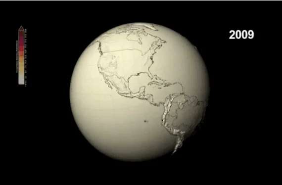
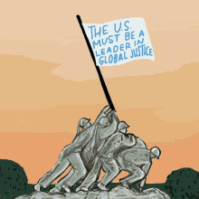
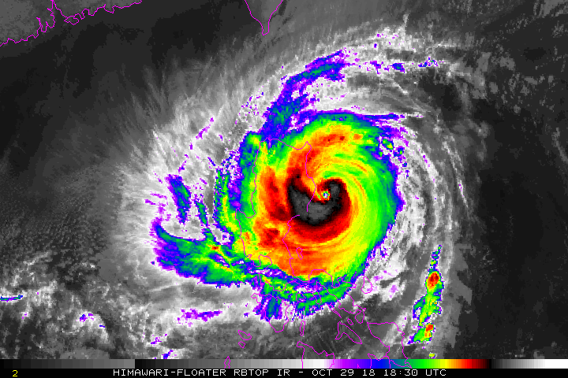
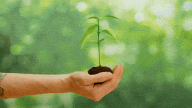
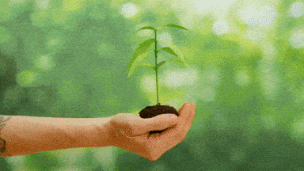
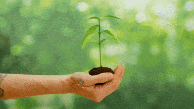

Climate change is one of the most pressing global issues, affecting ecosystems, economies, and societies worldwide. Rising temperatures, extreme weather events, and sea-level rise are interconnected with economic development and global justice.
Over the past decades, human activities have drastically accelerated environmental changes. The burning of fossil fuels, unsustainable farming techniques, and massive industrial expansion have released billions of tons of greenhouse gases into the atmosphere. These gases trap heat, causing global warming. As temperatures rise, ice caps melt, oceans warm, coral reefs degrade, and biodiversity suffers.
Climate change is not only an environmental issue—it is also a human rights issue. It affects vulnerable communities the most, including low-income families, disaster-prone regions, coastal populations, and indigenous groups. Global citizens must recognize the interconnectedness of social equity and environmental responsibility.
Today, scientific reports show that global average surface temperature has already increased by about 1.1 °C above pre‑industrial levels. This seemingly small rise masks large regional differences, where some places heat much more and suffer more extreme events. Climate models warn that unless emissions are drastically cut, we are likely to reach 1.5 °C or more within the next decade.
Because the climate system is interconnected, changes in one region ripple across the globe: melting polar ice raises sea levels elsewhere, while shifting ocean currents affect distant weather patterns. This means that local actions matter globally — and global policies affect local lives.


Cause & Effect
The causes of climate change include greenhouse gas emissions from industry, deforestation, and unsustainable agriculture. Its effects ripple across social, economic, and political systems worldwide.
As industries expand, the demand for energy increases. Most countries rely heavily on coal, oil, and natural gas—fossil fuels that release enormous amounts of carbon dioxide when burned. Deforestation also reduces the planet’s ability to absorb CO2, while improper agricultural practices emit methane and nitrous oxide, two powerful greenhouse gases.
One major driver is the concept of “historic emissions”: industrialised countries over the last century have emitted far more greenhouse gases, giving them greater responsibility to act.
The effects are already visible: stronger typhoons, deadly heat waves, water shortages, decreasing crop productivity, and high economic losses due to climate-related disasters. Vulnerable groups — including women, indigenous communities, children, and low-income nations — suffer first and worst because they have fewer resources to adapt.
Philippine Context
The Philippines is highly vulnerable to climate change, facing typhoons, flooding, and rising sea levels. According to PAGASA, the country experiences over 20 typhoons annually, affecting millions of people and disrupting agriculture.
Due to its geographic location, the Philippines sits along the Pacific Ring of Fire and typhoon belt, making it one of the world’s most disaster-prone countries. Climate change intensifies these natural hazards. Typhoon Haiyan (Yolanda) in 2013 remains one of the strongest storms ever recorded, causing massive destruction and loss of life.
Coastal communities face the threat of rising sea levels, which contribute to shoreline erosion, saltwater intrusion, and flooding. Farmers and fisherfolk struggle to adapt to unpredictable weather patterns, affecting food production and livelihood.
In addition, gradual sea-level rise causes long-term issues such as saltwater intrusion into farmland and freshwater supplies. Migration and displacement are emerging concerns, as families relocate from rural to urban areas due to climate impacts.

Media
Watch these informative videos about climate change and global justice:
This video explains what climate justice is — how global inequality is deeply connected to climate change, and why fairness matters in climate action.
Here’s another powerful video about how climate change and justice go hand in hand:
In this talk, the speaker argues that tackling climate change must include justice — especially for marginalized communities disproportionately affected by environmental harm.
Proposed Solutions
Addressing climate change requires global collaboration. Solutions include renewable energy adoption, reforestation, sustainable agriculture, and promoting climate justice policies to support vulnerable populations.
Transitioning to clean energy sources such as solar, wind, and hydroelectric power can significantly reduce carbon emissions. Governments must invest in climate-resilient infrastructure, disaster preparedness, and environmental education.
Effective solutions must include equity and justice — not just technological fixes. Climate justice ensures those most impacted are included in decision-making and that the burdens and benefits of climate policy are fairly shared.
At the community level, planting native tree species, restoring mangroves in coastal areas, promoting agro-ecological farming practices, and educating youth about climate care are practical steps that individuals can take.
On the policy level, countries need to honor the principle of “common but differentiated responsibilities” — industrialized nations lead emission reductions and provide support to developing nations.

Glossary & Key Terms
Greenhouse gases (GHGs): Gases such as carbon dioxide (CO₂), methane (CH₄), and nitrous oxide (N₂O) that trap heat in the atmosphere.
Climate justice: A framework addressing how climate change and its responses affect different people unfairly, seeking fair solutions.
Adaptation: Actions that help communities adjust to the impacts of climate change (e.g., building flood defenses, changing crop varieties).
Mitigation: Efforts to reduce or prevent greenhouse gas emissions (e.g., switching to renewable energy, improving energy efficiency).
Resilience: The capacity of communities, ecosystems or systems to absorb disturbances while maintaining function.
Contact
Reach out to us through any of the following channels:
 
